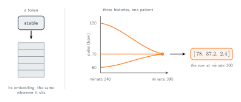

02 · Attention Over Time
One Number Is Not a Word
A single reading carries almost no meaning.
Attention is concerned in comparing rows against rows, on a sentence that is a sensible question to ask, because a token turns up already carrying its meaning. The vector for stable means stable wherever in the sentence it happens to sit. Now ask the same question of minute 300. Its row is $[78,\, 37.2,\, 2.4]$, minute 301 is $[79,\, 37.2,\, 2.4]$, and minute 302 is $[78,\, 37.3,\, 2.4]$. Scoring any of these against any other is arithmetic that runs perfectly well and tells us nothing. A pulse of 78 does not mean anything on its own. It means something relative to what the pulse was an hour ago, and that is nowhere in the row.
There is an obvious reply to that. Relating one row to other rows is precisely what attention is for. A specific row, like minute 300, doesn't need to hold its own history because the mechanism fetches it via query and key interactions with past rows. The model learns to weight historical data, such as a pulse reading from an hour ago, as needed. A narrow three-number row doesn't block score computation or stop gradient descent from finding valuable past data. The context missing from a single row is still present in the full sequence, which the attention mechanism reads in its entirety.
Follow that through and it fails at the first step. A query is a projection of a row, so whatever minute 300 is able to ask, it has to ask using $[78,\, 37.2,\, 2.4]$ and nothing else. Picture three ways the patient might have arrived at that minute: a pulse that has fallen from 120 over the past hour, a pulse that has climbed from 60, and a pulse that has sat at 78 since admission. All three write the same row at minute 300, so all three build the same query, wear the same key, and produce the same scores against every other minute in the stay. Attention can compare only what the rows contain, and what a row contains is a reading, never a trend.

There's also the concern regarding cost, attention scores every row against every row, so 2880 rows is $2880^2$ pairs, a little over eight million scores, to read two days of one patient. A twenty-token sentence costs 400. And had we answered the first of the three questions in section 01 with "one second" rather than "one minute", the same two days would be 172,800 rows and close to thirty billion pairs. The cost grows with the square of how finely we sample, and the information in a single row does not grow at all.
Put the two costs together and they turn out to be one complaint. Sampling more finely adds no information to a row, it only adds rows, and every row we add is paid for twice over in the score matrix. Sampling more coarsely thins the bill but discards the detail we were sampling for in the first place. Neither direction helps, because neither one changes what a row is. The problem was never the rate. It is that we chose an instant as the unit, and an instant is the one thing in a signal that carries no shape .